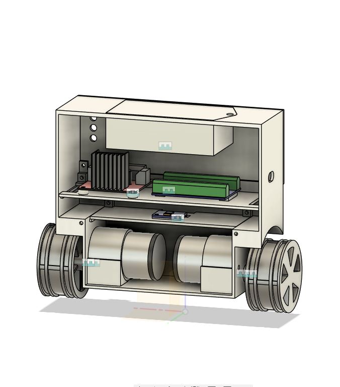
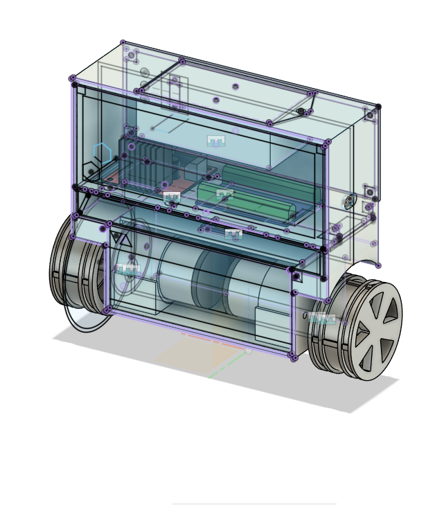

2 Wheel Balancing Robot
Project Overview
The 2-Wheel Balancing Robot is an exploration into control feedback loops, serving as a foundational stepping stone towards more complex projects like the Inverted Pendulum. The core objective was to build a self-balancing platform using custom C++ logic and an Arduino Uno. The robot actively reads orientation data from an MPU6050 accelerometer/gyroscope to maintain its equilibrium.
A key highlight of this project was implementing a simpler version of a "self-adjusting setpoint" to maintain balance despite mechanical imperfections. Due to its engaging visual nature, this robot was proudly featured during the IIEE (Institute of Integrated Electrical Engineers) "Week of Welcome" to inspire fellow EE students with achievable, hands-on robotics projects.
Hardware & Materials Stack
- Microcontroller: Arduino Uno
- Sensors: MPU6050 6-DOF Accelerometer/Gyroscope
- Motor Driver: L298N
- Actuators: Tested multiple configurations (12V high-torque/low-speed and 3.3V high-speed/geared motors)
- Power Supply: 2x 18650 Batteries
- Remote Control: FlySky RC Receiver
- Chassis/Frame: Custom 3D Printed Parts
Development Rundown
Mechanical Iterations & Motor Challenges
The mechanical design relied on custom 3D-printed components to house the Arduino and batteries while keeping the center of mass optimized. However, selecting the right motors proved to be the biggest challenge:
- Iteration 1 (3.3V Geared Motors): The initial 3.3V motors were fast enough, but introduced severe mechanical backlash and a lack of torque, making the balance wobbly.
- Final Iteration (12V High Torque): I ended up switching to 12V motors. They provided plenty of torque, but were far too slow to react quickly to falling, which made balancing extremely difficult and sluggish.


Control Logic & The L298N Limitation
The balancing logic was written entirely from scratch in the Arduino IDE. Instead of relying on pre-built libraries, I developed custom code to fuse the MPU6050 data and manage the motor outputs. I also implemented a simplified self-adjusting setpoint algorithm to help the robot find its true center of gravity dynamically.
A major hurdle in the control loop was the L298N motor driver. The driver and motors had a high minimum voltage and minimum speed threshold before they would physically turn. Because I couldn't command precise, micro-movements at low speeds, the robot had a tendency to overshoot—constantly shuttling forward and backward to stay upright. While not perfectly still, it successfully balanced within these hardware constraints.
FlySky RC Integration
To expand the robot's capabilities, I integrated a FlySky RC receiver to control forward/backward movement and steering. Because I was using custom-written logic rather than an established library, the turning mechanics were unpolished. The robot could move, but the turning radius was insufficient, highlighting the difficulty of blending remote control commands with an active balancing loop.

Key Takeaways & Future Roadmap
This project was an excellent practical introduction to PID controllers and hardware limitations. The struggle with motor backlash and the L298N's minimum speed threshold provided invaluable lessons on why premium motor drivers and low-backlash actuators are necessary for precision robotics. These lessons directly influenced the success of my later Inverted Pendulum project.
Future Iterations
For future versions, replacing the DC motors with stepper motors would be ideal. Steppers provide significantly higher holding torque and can be connected directly to the wheels, eliminating mechanical backlash while maintaining adequate speed.
However, doing so would require upgrading the microprocessor. Stepper motor control often relies on blocking code or heavy interrupt usage, which can interfere with the high-speed real-time balancing loop—this blocking issue was the primary reason I initially opted for DC motors on the Arduino Uno. An upgrade to a more powerful microcontroller (like a multi-core ESP32 or Teensy) would be necessary to handle the stepper pulses without interrupting the PID balancing calculations.